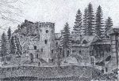
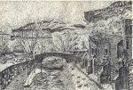
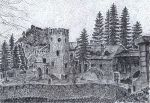
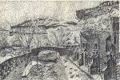

Страницы авторов "Тёмного леса"
Пишите нам! temnyjles@narod.ru
Ресторанный комплекс "Замок коварства и любви" находится в живописном, привлекательном в природно-ландшафтном отношении ущелье р. Аликоновки, на расстоянии 5 км к юго-западу от центра Кисловодска, в границах городской черты.
Прогулочные поездки к скальному мысу, напоминающему развалины древних башен и стен, у слияния Аликоновки с её правым притоком - речкой Мокрой, проводились ещё в первой половине XIX века. Тогда начали распространяться рассказы и легенды, связанные с оригинальной скалой. В них было немало вымышленных сюжетов, но для части повествований, по всей вероятности, существовала историческая подоснова. Так, само ныне существующее название реки стало использоваться только в середине XIX столетия и было связано с небольшим абазинским Аликоновским аулом, распологавшимся в начале века в северной равнинной части долины. Документы и карты сохранили и старинное местное название Аликоновки - Эмнока. Пристав Кабарды Афанасий Ураков по личному распоряжению Екатерины II составил в 1785 г. описания земель в верховьях Кумы и Подкумка, подвластных российской короне. В нём он, в частности, дал этимологию названия речки - "Гроза ущелий".
Хорошо известна в ряде вариантов красивая легенда о трагической любви доверчивого пастуха и княжеской дочери, жертвенности юноши и коварстве красавицы, последующей каре богов и т.д. Это предание могло быть связано с жителями аула Аликонова, но в романтическом виде изложено лишь в конце XIX века. В это время на фотографиях этой кисловодской достопримечательности и появляется подпись - "Замок коварства и любви". В последующем легенда была подхвачена, домыслена, и дополнена проводниками и экскурсоводами, сопровождавшими посетителей скалы и загородного ресторана. При этом все они точно показывали высокую столбообразную скалу, с которой влюблённые договорились броситься вместе, взявшись за руки, чтобы умереть неразлучными, но прыгнул (или упал, сражённый кинжалом коварной красавицы) только джигит Али Конов.
В середине 1950-х годов стало известно, что скала, похожая на старинный замок, была местом нахождения древних поселений и укреплений.Археологи открыли в районе "Замка" целую группу историко-культурных памятников. Постоянные обитатели на скальном мысу появились много веков назад. Уже в V-IV тысячелетиях до н.э. здесь существовал посёлок медно-каменного века. Затем жизнь в этом районе не прекращалась до позднего средневековья. В VI-X вв. на скальном шпиле располагалась крепость местного правителя с крупным башенным комплексом. Не с этим ли временем связаны истоки легенды о любви и коварстве? Кстати, об историчности, отражённого в легендах, землетрясения и камнепада ("божья кара"), свидетельствуют, помимо старого названия реки, крупные каменные блоки в ущелье, отвалившиеся от возвышенных скальных террас в разное время, в том числе, возможно, и в XX веке.
Существовали и другие рассказы о любви и коварстве, увязываемые с этим районом. В журнале "Кавказские курорты" (1913г.) описывалась история, якобы происшедшая в начале 1820-х годов. В это время среди отдыхающих на Кислых водах находился абхазский князь Шервашидзе. Ему приглянулась красивая молодая княжна Татьяна Голицына, за которой ухаживали многие мужчины из "водяного общества", нередко ссорившиеся между собой. Во время отсутствия князя в Абхазии появился новый претендент на княжеский престол - Аслан-бей, который решился на убийство законного правителя. Пробравшись с отрядом к Кисловодску, Аслан-бей стал следить за князем Шервашидзе, поджидая удобного случая. Однажды абхазский князь с княжной Татьяной, группой отдыхающих и охраной направился на прогулку к скале "Замок". В Аликоновском ущелье их поджидала засада. Во время стычки князь был смертельно ранен, а княжна Голицына упала в обморок. И только помощь подоспевших казаков, вызванных одним из охранников князя, предотвратила дальнейшую трагедию.
В конце XIX века скала "Замок" как местная достопримечательность вошла в путеводители по КМВ. Она была очень похожа на подобное скальное сооружение, называемоеСтарый замок ("Alte Schloss"), при знаменитом немецком курорте - Баден-Баден. Экскурсии к кисловодскому "Замку" совершались на конных колясках, вехом и пешком. Извозчики выступали в качестве знающих гидов. На удобных площадках у подножия скалы расположились сначала временные приспособления для проведения пикников.
Весной 1898г. здесь появилось первое постоянное заведение, состоящее из нескольких навесов-беседок и прямоугольного здания с двускатной крышей, где находилась кухня, хозяйственные помещения и жильё для работников. С января 1898г. по декабрь 1915г. землю с постройками при "Замке" арендовал предприимчивый кисловодский ресторатор Василий Дзлиев с компаньонами, которые платили по 650р. в год обществу Кисловодской (а затем Николаевской) слободки. За это время при "Замке" было произведено арендатарами построек на сумму 10 тыс. рублей. Одним из посетителей этого времени стал ростовский писатель Д. Мордовцев, описавший свои впечатления в рассказе с красноречивым названием "Кисловодск - это рай!". В ресторане было печное отопление и кухня с внутренней варочной печью. Путеводитель по КМВ 1901г. сообщал, что при "Замке коварства" построен ресторан, в котором можно укрыться от дождя и получить чай, молоко, шашлык и прочее. Позже у здания за невысоким каменным забором был образован небольшой сад с открытыми навесами и беседками. Второе, более изящное, ресторанное здание появляется в начале 1900-х годов на правом берегу Аликоновки у места ее слияния с Мокрой непосредственно у легендарной скалы. На торгах в январе 1916г. право аренды ресторана "Замок" получил А. Ананьев предложивший за пятилетний срок плату в 3505 р. Он также принял на себя электрическое освещение ресторанаи ежегодный ремонтдороги к нему. Большая часть построек у скалы "Замок" была разрушена в годы Гражданской войны.
В советское время на старом месте были возведены новые одноэтажные постройки, в которых был устроен небольшой загородный ресторан, а на склонах скалы поставлен ряд деревянных беседок. Сооружения пострадали во время Отечественной войны. Около 1950г. было сооружено оригинальное зданиенового ресторана в виде средневекового каменного замка с массивной башней, который в конце XX века был признан памятником архитектуры местного значения. Предполагают, что автором этого проекта был кисловодский зодчий Павел Еськов (1888-1967). На правом берегу действовало кафе в виде крытой галереи с кухней, а в 1970-е годы здесь возведено капитальное каменное стилизованное двухуровневое строение - загородное кафе "Сакля".
После приватизации комплекса в 1998 г. была проведена масштабная реконструкция всех построек (арх. С.Курусь), создано каменное ограждение с металлическими решётками, возведены новые строения. В таком виде ресторан действует и ныне.
Расположенный вблизи "Замка", известный с дореволюционных времён источник Нарзана, был благоустроенв в конце 1960-х годов, и на нём появился художественно оформленный каменный каптаж.
С.В. Боглачёв, С.Н. Савенко. Архитектура Старого Кисловодска. Изд-во "СНЕГ", 2006
Главная страница сайта
Последнее изменение страницы 6 Oct 2018
{kind=link}
{kind=link}